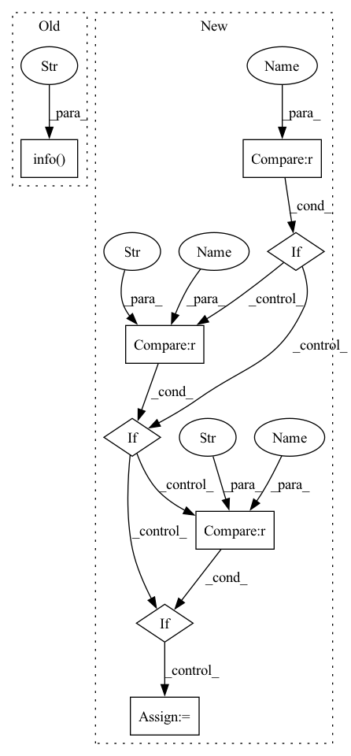

Pattern ID :33080
Before Change
self.embedder_type == "positional")
self.view_embedder, self.view_embed_dim = get_positional_embedder(self.view_multires,
self.embedder_type == "positional")
log.info(f"Position Embed Dim: {self.pos_embed_dim}" )
log.info(f"View Embed Dim: {self.view_embed_dim}")
def init_decoder(self):
Initializes the decoder object. After Change
def init_embedder(self, embedder_type, frequencies=None):
Creates positional embedding functions for the position and view direction.
if embedder_type == "none" :
embedder, embed_dim = None, 0
elif embedder_type == "identity" :
embedder, embed_dim = torch.nn.Identity(), 0
elif embedder_type == "positional" :
embedder, embed_dim = get_positional_embedder(frequencies=frequencies)
else:
raise NotImplementedError(f"Unsupported embedder type for NeuralRadianceField: {embedder_type}")
return embedder, embed_dimIn pattern: SUPERPATTERN
Frequency: 3
Non-data size: 8
Instances Fragment ID: 95680755
Project Name: nvidiagameworks/kaolin-wisp
Commit Name: 688dfebfd03fbfa81560f103244bc7e776e47245
Time: 2022-12-20
Author: 9556101+orperel@users.noreply.github.com
File Name: wisp/models/nefs/nerf.py
M Class Name: NeuralRadianceField
N Class Name: NeuralRadianceField
M Method Name: init_embedder(3)
N Method Name: init_embedder(1)
M Parent Class: BaseNeuralField
N Parent Class: BaseNeuralField
M File Name: wisp/models/nefs/nerf.py
N File Name: wisp/models/nefs/nerf.py
M Start Line: 34
M End Line: 42
N Start Line: 65
N End Line: 76
Before Change
def state_dict_hook(module, state_dict, *args, **kwargs):
Redirect model as output state_dict for OTE model compatibility
logger.info("----------------- SAMImageClassifier.state_dict_hook() called" )
if type(module.backbone).__name__ == "OTEMobileNetV3":
output = OrderedDict()
for k, v in state_dict.items():
if k.startswith("head.classifier"):After Change
def state_dict_hook(module, state_dict, *args, **kwargs):
Redirect model as output state_dict for OTE model compatibility
backbone_type = type(module.backbone).__name__
if backbone_type not in ["OTEMobileNetV3", "OTEEfficientNet", "OTEEfficientNetV2"] :
return
output = OrderedDict()
if backbone_type == "OTEMobileNetV3" :
for k, v in state_dict.items():
if k.startswith("backbone"):
k = k.replace("backbone.", "")
elif k.startswith("head"):
k = k.replace("head.", "")
if "3" in k: // MPA uses "classifier.3", while OTE uses "classifier.4". Convert for OTE compatibility.
k = k.replace("3", "4")
output[k] = v
elif backbone_type == "OTEEfficientNet":
for k, v in state_dict.items():
if k.startswith("backbone"):
k = k.replace("backbone.", "")
elif k.startswith("head"):
k = k.replace("head", "output")
output[k] = v
elif backbone_type == "OTEEfficientNetV2" :
for k, v in state_dict.items():
if k.startswith("backbone"):
k = k.replace("backbone.", "")
elif k == "head.fc.weight":
k = k.replace("head.fc", "model.classifier")
if not module.is_export:
v = v.t()
output[k] = v Fragment ID: 95680759
Project Name: openvinotoolkit/model_preparation_algorithm
Commit Name: 645893988f346dd87d1b1868bf6c58f4b9784cb4
Time: 2022-04-06
Author: songki.choi@intel.com
File Name: mpa/modules/models/classifiers/sam_classifier.py
M Class Name: SAMImageClassifier
N Class Name: SAMImageClassifier
M Method Name: state_dict_hook(2)
N Method Name: state_dict_hook(2)
M Parent Class: ImageClassifier
N Parent Class: ImageClassifier
M File Name: mpa/modules/models/classifiers/sam_classifier.py
N File Name: mpa/modules/models/classifiers/sam_classifier.py
M Start Line: 58
M End Line: 83
N Start Line: 58
N End Line: 91
Before Change
self.pos_embedder, self.pos_embed_dim = get_positional_embedder(self.pos_multires,
self.embedder_type == "positional")
log.info(f"Position Embed Dim: {self.pos_embed_dim}" )
def init_decoder(self):
Initializes the decoder object.
After Change
def init_embedder(self, embedder_type, frequencies=None, position_input=True):
Creates positional embedding functions for the position and view direction.
if embedder_type == "none" :
embedder, embed_dim = None, 0
elif embedder_type == "identity" :
embedder, embed_dim = torch.nn.Identity(), 0
elif embedder_type == "positional" :
embedder, embed_dim = get_positional_embedder(frequencies=frequencies, position_input=position_input)
else:
raise NotImplementedError(f"Unsupported embedder type for NeuralSDF: {embedder_type}")
return embedder, embed_dim Fragment ID: 95680757
Project Name: nvidiagameworks/kaolin-wisp
Commit Name: 688dfebfd03fbfa81560f103244bc7e776e47245
Time: 2022-12-20
Author: 9556101+orperel@users.noreply.github.com
File Name: wisp/models/nefs/neural_sdf.py
M Class Name: NeuralSDF
N Class Name: NeuralSDF
M Method Name: init_embedder(4)
N Method Name: init_embedder(1)
M Parent Class: BaseNeuralField
N Parent Class: BaseNeuralField
M File Name: wisp/models/nefs/neural_sdf.py
N File Name: wisp/models/nefs/neural_sdf.py
M Start Line: 103
M End Line: 108
N Start Line: 54
N End Line: 65
Before Change
self.view_embedder, self.view_embed_dim = get_positional_embedder(self.view_multires,
self.embedder_type == "positional")
log.info(f"Position Embed Dim: {self.pos_embed_dim}")
log.info(f"View Embed Dim: {self.view_embed_dim}" )
def init_decoder(self):
Initializes the decoder object.
After Change
def init_embedder(self, embedder_type, frequencies=None):
Creates positional embedding functions for the position and view direction.
if embedder_type == "none" :
embedder, embed_dim = None, 0
elif embedder_type == "identity" :
embedder, embed_dim = torch.nn.Identity(), 0
elif embedder_type == "positional" :
embedder, embed_dim = get_positional_embedder(frequencies=frequencies)
else:
raise NotImplementedError(f"Unsupported embedder type for NeuralRadianceField: {embedder_type}")
return embedder, embed_dim Fragment ID: 95680761
Project Name: nvidiagameworks/kaolin-wisp
Commit Name: 688dfebfd03fbfa81560f103244bc7e776e47245
Time: 2022-12-20
Author: 9556101+orperel@users.noreply.github.com
File Name: wisp/models/nefs/nerf.py
M Class Name: NeuralRadianceField
N Class Name: NeuralRadianceField
M Method Name: init_embedder(3)
N Method Name: init_embedder(1)
M Parent Class: BaseNeuralField
N Parent Class: BaseNeuralField
M File Name: wisp/models/nefs/nerf.py
N File Name: wisp/models/nefs/nerf.py
M Start Line: 34
M End Line: 42
N Start Line: 65
N End Line: 76